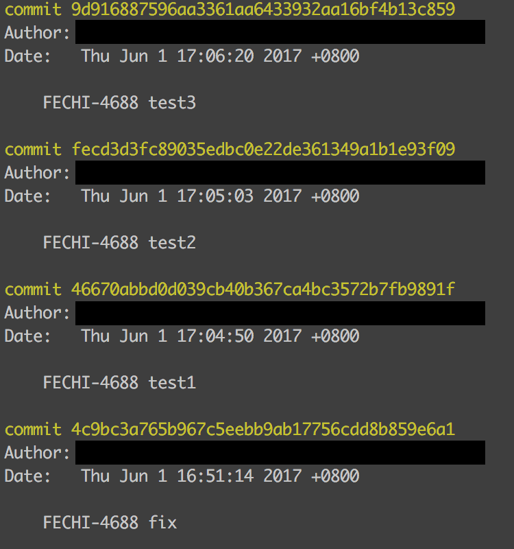
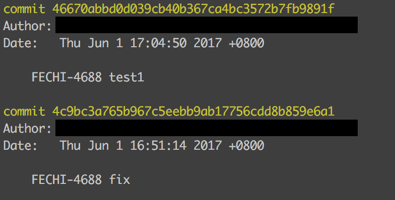
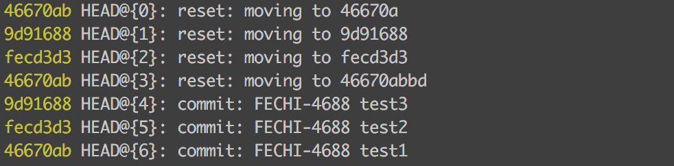
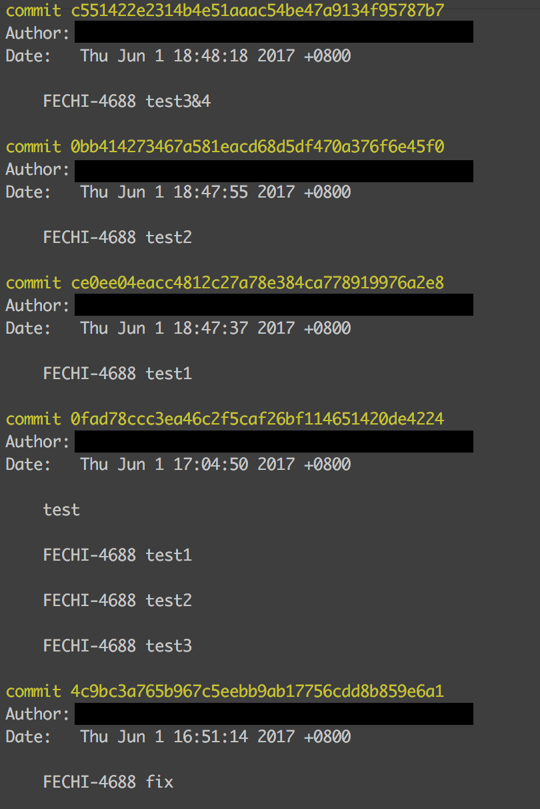
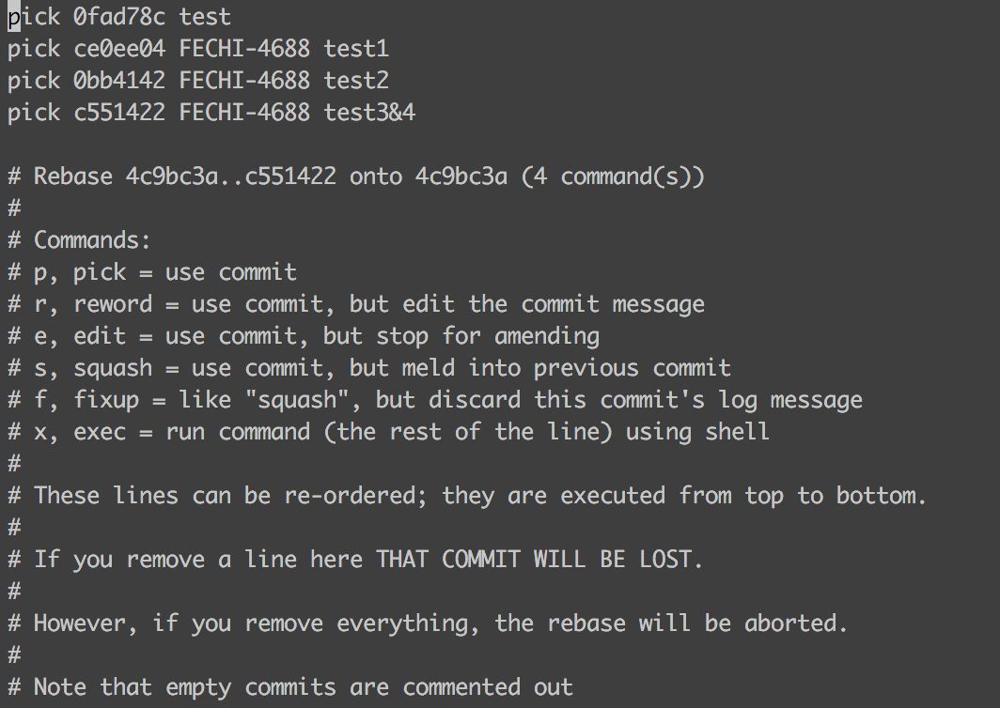
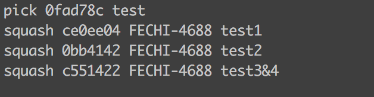
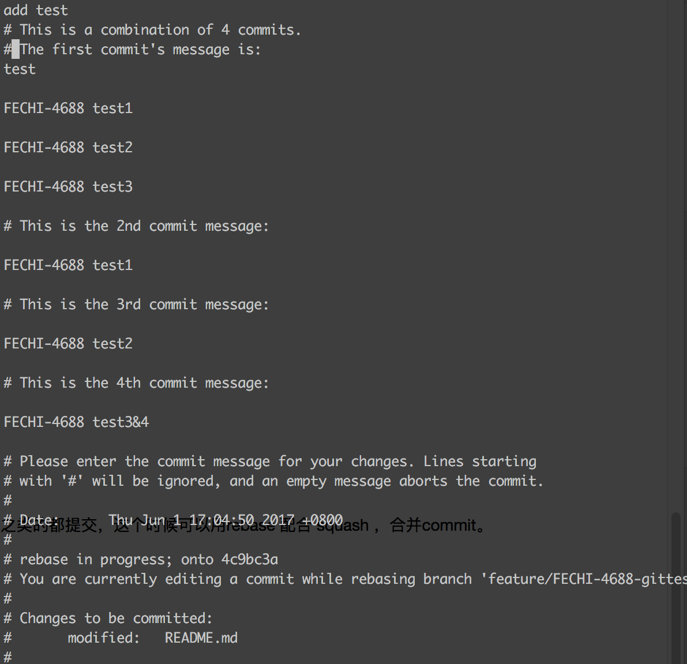
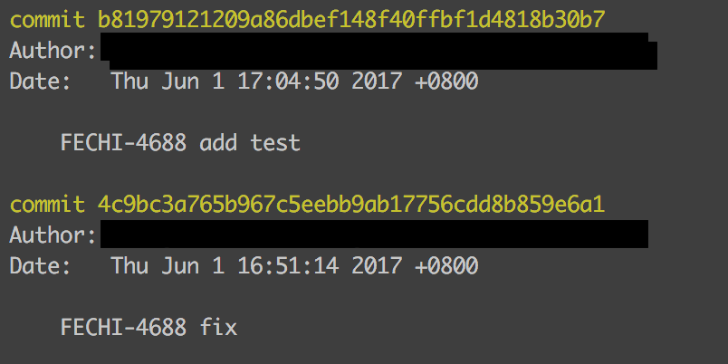

实用指令
回滚相关
最近又好好复习了下reset指令。
一般这些回滚的操作最好不要用，尤其是在多人开发的时候，但是偶尔想用，还有点模糊了，这次在记录一下。
git reset
步骤：
readme中分别添加
test1
tess2
test3
每一句添加一个commit
先看下log
git log

暂存区有其他修改，但没有add。
此时，我改错了，想回退到test1的状态。用
git reset --hard 46670a
执行后，暂存区的内容也清空了，readme中，只有test1 了。
查看git log前两个提交也不见了。

假如我后悔了，我又不想回退了，我还想在test3的情况下修改。
git reflog

可以看到指令的log，从这里可以找回之前回退的相关commit
这里会记录着还未被回收的commit号。
此次，我把内容添加到暂存区了，也就是add过了，
再次使用reset，回滚到原来的test3的状态
git reset --hard 9d91688
内容回到test3 处的commit，并且，之前add到暂存区的都没了
真想回滚，用reset就够了。
revert
其实是取消某个提交的意思。
revert 功能：revert是撤销某一次的提交，并不是回滚到这次提交时的状态！！！
revert 的历史保留在commit中
rebase
用来合并多个commits
场景，我们自己在本地改了好多乱七八糟的，但是并不想让所有的commit信息，比如fix之类的都提交，这个时候可以用rebase 配合 squash ，合并commit。
过程如下：
先
git log：

我们想将0fad78ccc3到现在的commit都合并, 那么先rebase到那个不变动的commit
git rebase -i 4c9bc3a7
如下：

需要留一个pick，其他都改成squash, 如下

esc :wq
保存后，这样就把其他的提交都合并了。自动跳到如下界面(这里可以重写合并的commit内容了)

修改完毕，esc :wq 保存

最后，看下git log，干净了！！！！
远端分支回滚
如果远端对应的分支也想修改，必须要—force
git push --force origin branch-name
刪除远端分支
git push origin --delete target_branch